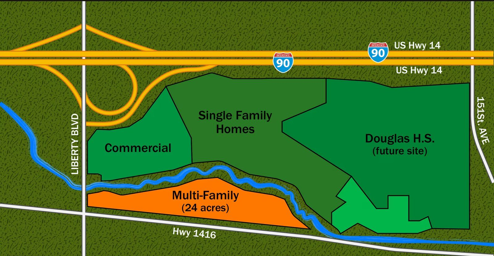

Freedom Estates · Box Elder, South Dakota
The master plan
A master-planned community taking shape at the Interstate 90 & Liberty Boulevard interchange — commercial frontage at the gateway, 24 acres of multi-family along Highway 1416, a single-family neighborhood at its heart, and the future Douglas High School to the east. Minutes from Ellsworth Air Force Base, the future home of the B-21 Raider.
Concept visualization — not an approved plat or site plan. Zone locations, acreages and uses are conceptual and subject to change. Information deemed reliable but not guaranteed.